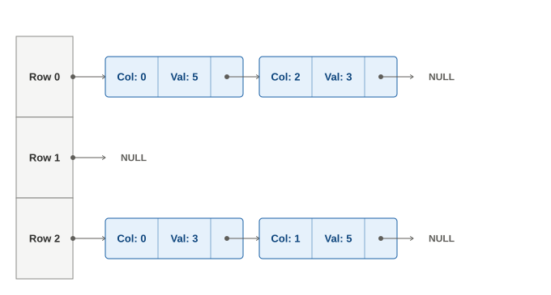

在有些狀況下，一個矩陣中可能只有少數幾個元素不是 0；此時，要乖乖的存下整張矩陣可能會非常浪費空間，用一般的演算法來處理它可能也會非常浪費時間；這樣子的矩陣，我們稱為稀疏矩陣。儲存稀疏矩陣的核心精神，是只記錄非 0 值的位置和值，以及矩陣邊長等必要資訊；你可以在此基礎上，對實作方式等細節自行做取捨。本篇將介紹如何以 linked list 來儲存稀疏矩陣，以及使用該儲存格式進行計算。
下圖是使用 linked list 來儲存稀疏矩陣的一種做法示意，其中每一個 row 是用一條 linked list 來表示那個 row 的哪些 column 有什麼值，而指向這些 linked lists 開頭的指標，則用一個普通的 list 來存放：

用程式建構出前述圖片的稀疏矩陣的範例如下：
class SpMatNode(object): def __init__(self, col, val, next_node=None): self.col = col self.val = val self.next = next_node N = 3 sp_mat = [None for _ in range(3)] sp_mat[0] = SpMatNode(0, 5) sp_mat[0].next = SpMatNode(2, 3) sp_mat[2] = SpMatNode(0, 3) sp_mat[2].next = SpMatNode(1, 5) # Display for i, row in enumerate(sp_mat): col = row print(f'Row {i}: ', end='') while col: print((col.col, col.val), end=' ') col = col.next print()當然，你也可以把每個 row 的開頭的指標，改成用 linked list 或者是字典來存放；這些方法各有其適合的狀況，如下：
- 普通 list：
- Row 數目不太可能變動，且大多數的 row 都有值。
- 需要 O(1) 找到某個 row。
- Linked list：
- Row 數目很可能會變動。
- 有值的 row 的數目不多且相當需要節省空間。
- 不能在 O(1) 找到某個 row 也無所謂。
- 字典：
- Row 數目很可能會變動。
- 每個 row 以名稱（例如電路的元件名稱）來存取較為自然。
- 需要 O(1) 找到某個 row。
而對於稀疏矩陣的運算，若是加法或 row operation 等狀況的話，可以對 rows 之間比照多項式相加來處理；而若是乘法的話，則可能會需要先把乘號右邊的矩陣做轉置。